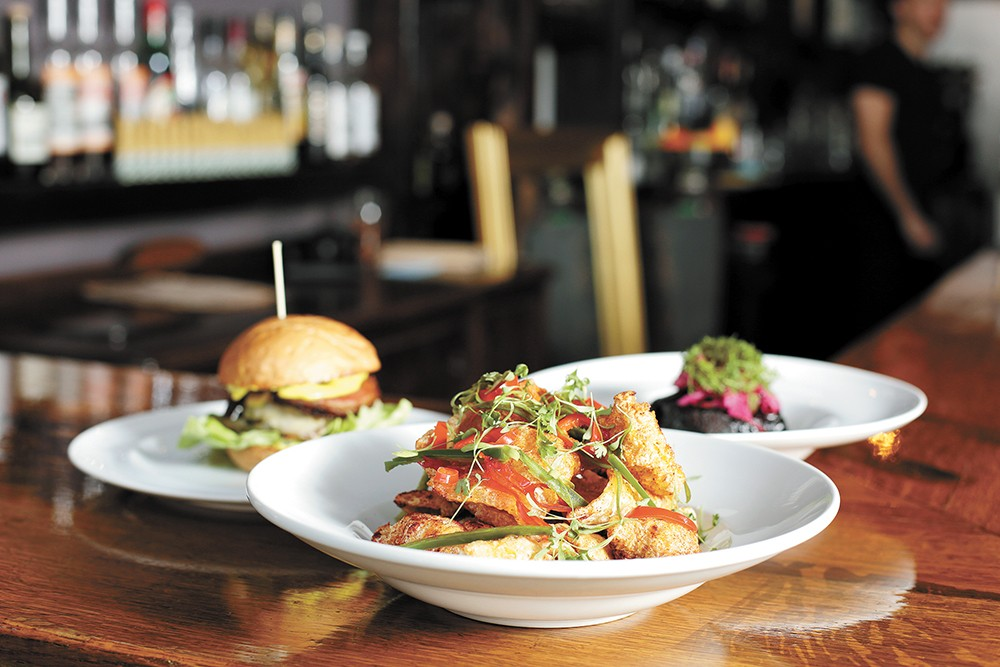
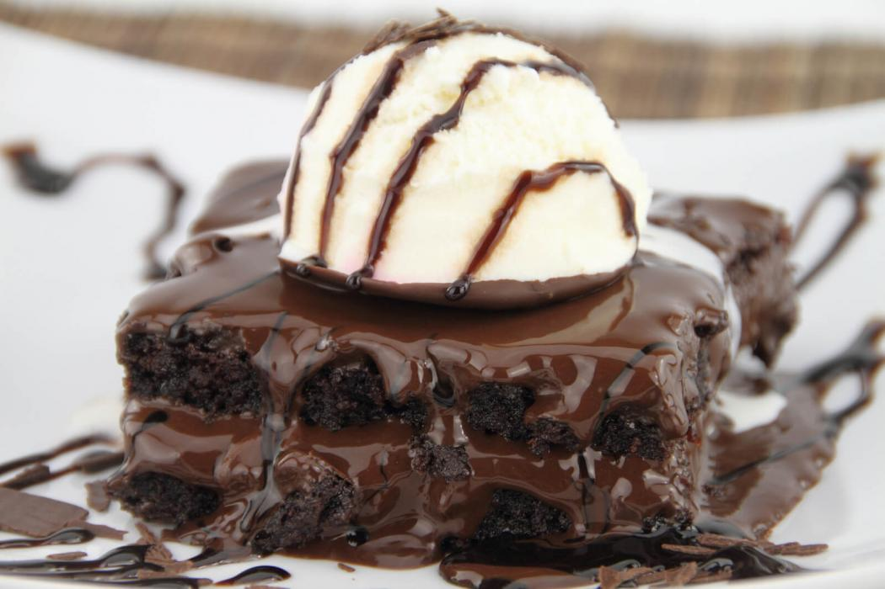

Food Restaurants
The struggle of finding good food to eat while also stressing about the workload of college can be extremley difficult. That's why we decided to do the work for you and get you some of the best food options around the Newark college campuses.
Visit our Foods Page
Drinks Spots
Every college student has rough mornings and we know that. Sometimes all you need is a nice cup of refreshing juice or coffee in order to get you going. We decided to get you the best drink spots around the Newark college campuses.
Visit our Drinks Page

Dessert Places
After a day of tests and homework and classes, students just want to get some comfort food. What's a better comfort food than some ice-cream or cake? We've got you covered with the best dessert places near the Newark college campuses.
Visit our Desserts Page